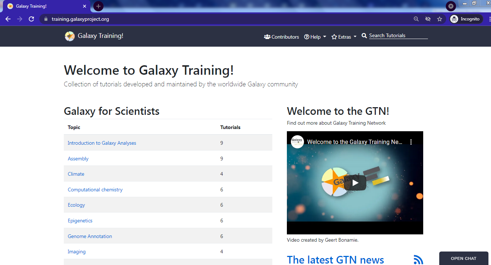
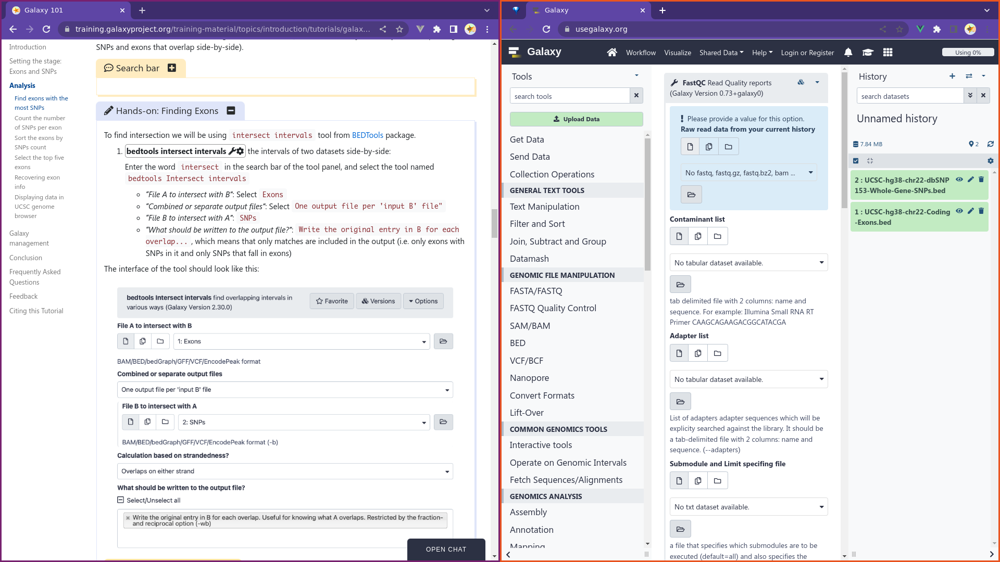
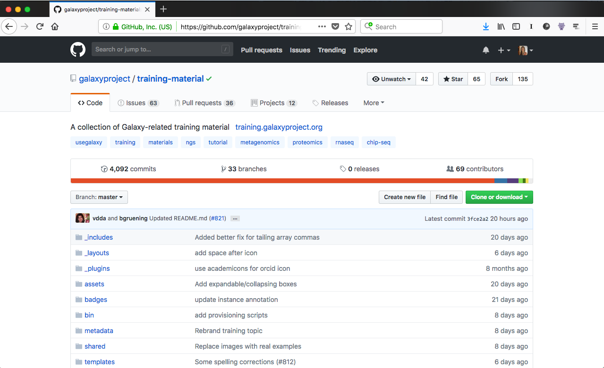
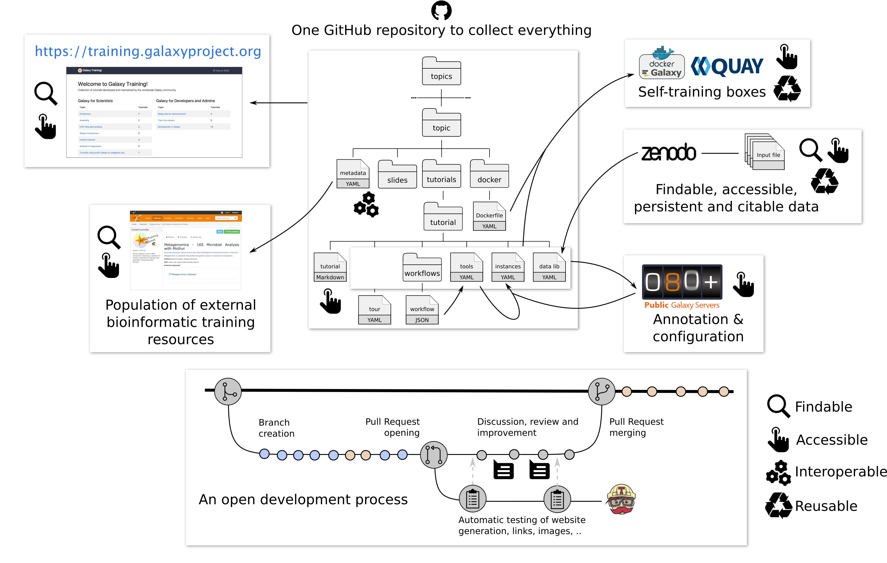
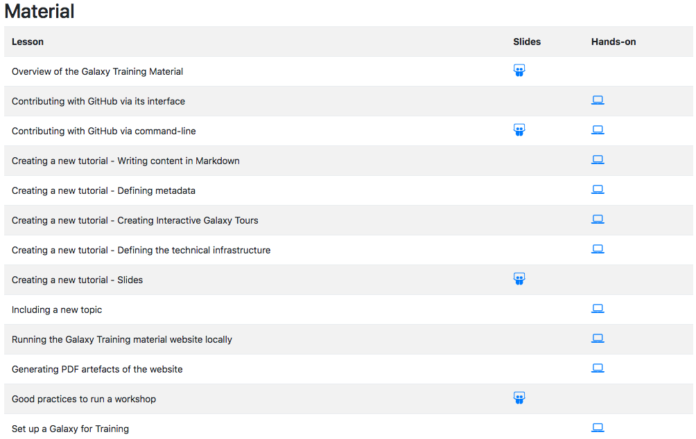

Overview of the Galaxy Training Material
Contributors
 Bérénice Batut
Bérénice Batut
Welcome to the Galaxy Community
There are tons of ways to help out and become a Galaxy contributor - through support, training, presentations, events, code, tools, testing, and documentation.
Speaker Notes Thanks for your interest in contributing to the Galaxy project, and making it easier to enable reproducible, accessible, and transparent data-intensive science for everyone! —
Some questions
- Are you an instructor, giving training/workshop?
–
- Are you using Galaxy for training?
–
- Do you know the resources of the Galaxy Training Network?
Speaker Notes To make it easier to get started, we’ll work you through some of the steps. —
Galaxy Training Material
.image-75[]
https://training.galaxyproject.org
One website, aggregating training material covering many current research topics.
Interactive learning via hands-on tutorials built around a “research story”

Usable by individual users & instructors
Developed and maintained by the community on GitHub
.image-75[]
https://github.com/galaxyproject/training-material
Repository structure

Some questions
- Have you already contributed to a project using GitHub?
–
- Have you already contributed to the Galaxy Training Material?
–
- Are you using Windows?
Speaker Notes Don’t worry if you’re new to “open source”, or if you’re still a student – many of our contributors are, too, and we’d be happy to provide mentorship and support if this is your first time contributing to an open-source project.
The main thing is that you are passionate about addressing common challenges in data-intensive science and that you’re responsible and reliable.
Contributing to Training Material

https://training.galaxyproject.org/topics/contributing/
Contributing using GitHub
- Fork
- Clone locally
- Create a branch
- Commit changes
- Open a Pull-Request
Tutorials:
Run the website locally
- Install the requirements
- Check the website locally on http://127.0.0.1:4000/training-material/
- Stop the server
Tutorial: Running the Galaxy Training material website locally
Creating a new topic
- Define the topic
- Create the directory for the topic
- Make the templating system aware about the topic
Tutorial: Including a new topic
Creating a new tutorial
- Define the topic (tutorial)
- Create the directory for the tutorial (tutorial)
- Add metadata
- Create a toy dataset
- Write the tutorial (tutorial)
- Add some technical support (tutorial)
- Add slides (optional) (tutorial)
Tutorial: Creating a new tutorial
Running a workshop
- Set up a Galaxy for Training (tutorial)
- Generating PDF snapshots of the website (tutorial)
- Good practices to run a workshop (tutorials)
Thank you!
This material is the result of a collaborative work. Thanks to the Galaxy Training Network and all the contributors! This material is licensed under the Creative Commons Attribution 4.0 International License.
This material is licensed under the Creative Commons Attribution 4.0 International License.